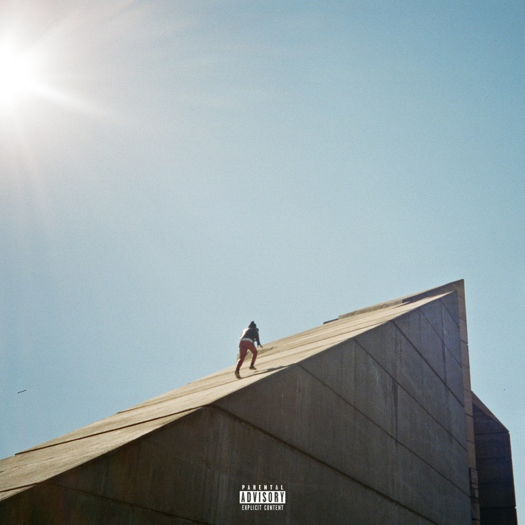
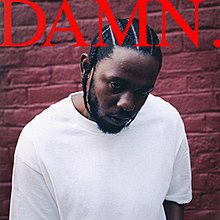
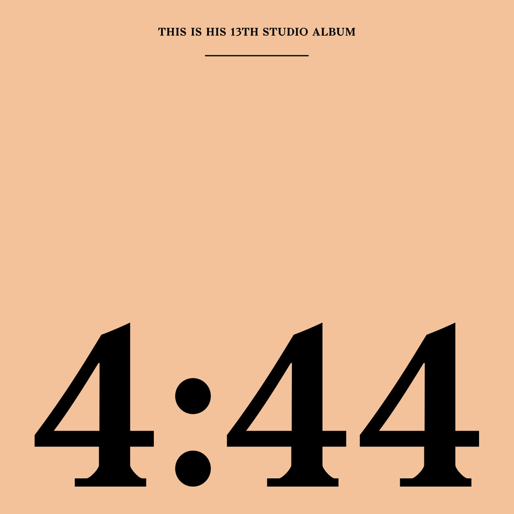
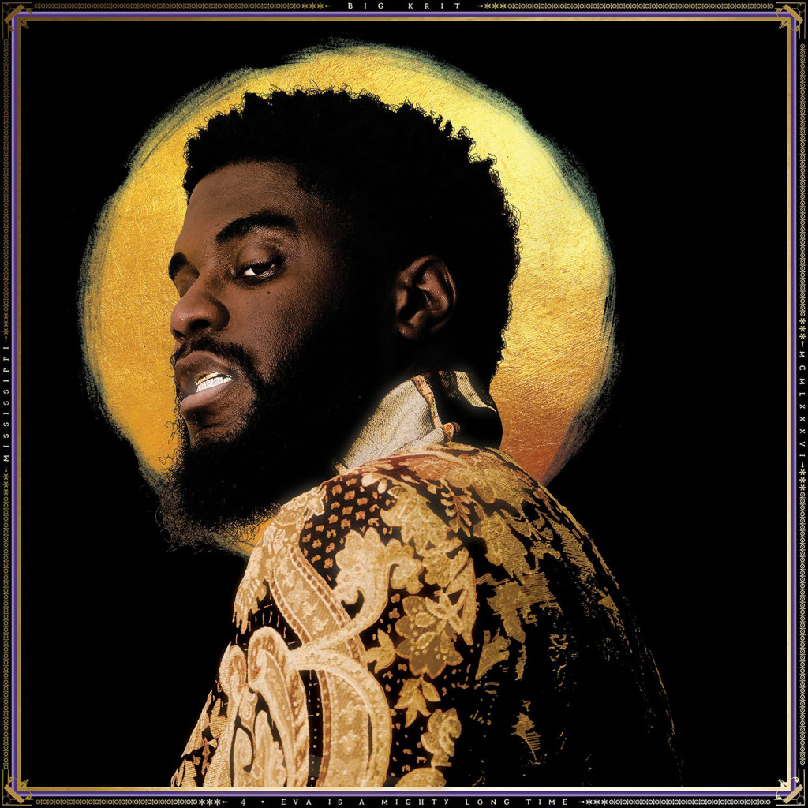

ChordScore's Top 5 Albums of 2017
#5: "Freudian", by Daniel Caesar
Singer-songwriter Daniel Caesar's debut album Freudian is an atmospheric and low-key r&b record, filled to the brim with raw emotion and gorgeous production that is irresistibly groovy and lovable. In this short 35 minute album, Daniel covers a lot of artistic ground, all the while paying homage to some of the greats in contemporary R&B, such as Earth Wind and Fire, The Isley Brothers, and even some old school Michael Jackson. From the enamoring acoustic ballad "Best Part" with a perfect guest appearance from H.E.R., to the grand and epic "We Find Love", Daniel displays nothing but pure talent and versatility on Freudian, and with such an excellent debut, I, along with many others are excited to see where Daniel Caesar will go in the future.
#4: "DAMN.", by Kendrick Lamar
DAMN. is one of Kendrick Lamar's most interesting and intriguing releases yet, delivering to listeners a series of tracks that are steeped in chaos and inner conflict. DAMN. is a far cry from his previous release in 2015, To Pimp a Butterfly, in which Kendrick preached unity and strength in a politically unstable world, on top of jazzy beats and instrumentation that seemed to have a life all in it's own. In sharp contrast, Kendrick has never sounded more depressed and unsure about the world and even himself on his newest release, and he conveys that emotion masterfully in the 14 tracks given to us. Whether it'd be K-Dot criticizing his peers on the upbeat banger, HUMBLE., or Kendrick struggling with the tension caused between his personal life and his status as one of the best rappers alive on PRIDE., the Compton MC delivers to us a beautifully grim project that gives us all us listeners one thing to say when we take a step back and look at the current state of our world: "damn..."
#3: "4:44", by JAY-Z
On his most intimate album yet, Mr. Carter gives us a series of tracks preaching common sense, maturity, and patience in a culture dominated by the complete opposite. With absolutely no desire to follow any current trends in hip hop, Hov presents to his listeners a low key, laid back, cerebral rap record made up of very classy and skeletal production, courtesy of hip hop legend No I.D. From the very uplifting gospel choral samples on Smile, to the very heart warming and emotional moment on Family Feud, where we find Jay dragging himself through the mud due to his recent infidelities involving his wife, only to send the track off with a beautiful moment between Beyonce and Jay, singing together, letting the beat ride out over their voices. With simple-but-classic production, intelligent lyrics, and an adorable surprise verse from his daughter, the self-proclaimed king of New York doesn't give us any reason to doubt him with 4:44.
#2: "Laila's Wisdom", by Rapsody
On her second studio album, underated Fem-C Rapsody makes a splash in the rap game with Laila's Wisdom. Packed with amazing features from Kendrick Lamar, Busta Rhymes, Anderson .Paak, and A-1 production from jazz-rap legend 9th Wonder, Rapsody solidifies her place in the culture, proving to her peers that she isn't one to be slept on. With the release of the albums lead single; POWER, Rapsody comes right out of the gate with a banger, catching people off guard with her relentless flow and charisma on the track, leaving listeners dumbfounded by the complexity and energy of the track, even before Kendrick hops on in the latter half. Then on tracks like Chrome or A Rollercoaster Jam Called Love, all having a very relaxed, boom-bap vibe to them, making it damn near irresistible to bop your head to. Rapsody has broken into the rap scene with possibly the best album to come from a female rapper in the decade, as well one of the smartest and sweet-sounding albums of the year.
#1: "4eva Is A Mighty Long Time", by Big KRIT

On this 85 minute double album, Mississipi rapper Big KRIT makes an explosive return to the mainstream with 4eva is a Mighty Long Time. With this dense project, KRIT goes for a very interesting approach, using the two sides of this album to deliver two separate concepts as well. The first disc of this album representing KRIT's "rapper side", filled with southern-flavored bangers such as the appropriately named song Subenstein, literally rapping about the bass in his song being so powerful that it's bringing his subwoofer to life. There's also a few club hits sprinkled throughout as well, most notably the very sensual and sexy 1999, and KRIT does all of this while still managing to send a positive message to his listeners nd not make it seem forced or unnatural. All said and done, the first half raps up nicely in a tight, 40 minute package, but then the track Justin Scott comes on, and fills your ears with unbelievably gorgeous instrumentation, catching you completely off guard. The track leaves you enamored, stuck listening to the beautifully layered sounds and harmonizing vocals on the latter part of the track. This track, being the only one where KRIT doesn't rap on, is probably the most beautiful, speaking to his listeners through his music rather than his words, and this track marks the start of the second disc, where KRIT steps back and examines himself not as a rapper, but as a human being. With the second track on disc 2, Mixed Messages, KRIT; or should I say Justin, criticizes and questions himself for being morally inconsistent in his music. Then going to the song Drinking Sessions, Justin rambles about random thoughts that he has had during his disappearance, talking about relationships, family, friends, and most notably his now non-existant record deal with Def-Jam. He goes on to say that the suits at Def-Jam were suppressing his artistry, not allowing him to create what he wanted, which resulted in him growing more depressed and developing a problem with alcohol abuse. But he then sharply turns the song into a moment of redemption, explaining that he got out of his deal, has been leading a healthier lifestyle, and went on to make this album, the one he's always wanted to. This album has left me at a loss for words. When I go back and listen to this album, I can't help but feel pure joy. KRIT takes risk after risk on this album and each one pays off greatly, letting him manage to carve out a space of his own in a culture that has gone and evolved without him, and that is the mark of a true artist. There aren't many that can disappear from the public eye for years and then come back with a beautifully diverse album and make waves, but what else can I expect from a southern legend like KRIT. Ultimately, 4eva is a Mighty Long Time leaves me feeling happy, partly because of the exquisite music, and because I'm excited to see what Mr. Scott does next, especially ow that he's free to create what he wants, how he wants it. Thank you for this amazing album Mr. Scott, it's one that hip hop needed desperately and I, along with many, am ecstatic that you were the one to heed that call.